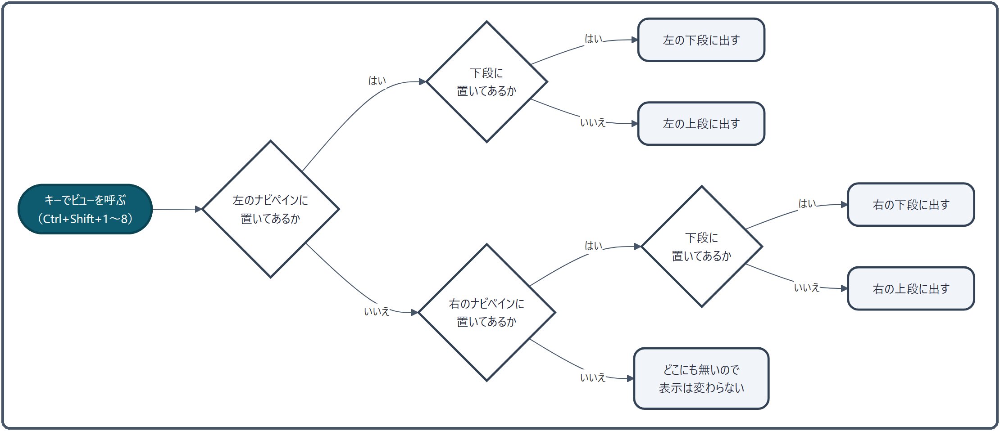

ナビペイン¶
ファイル一覧の左右にある、「ビュー」を入れておく場所です。お気に入り・ツリー・履歴・ターミナルなど 20 種類ほどのビューから、使うものを好きな枠に置き、キーひとつで呼び出せます。
できること¶
| したいこと | 操作 |
|---|---|
| ビューを切り替える | アイコンバーのアイコンを押す、または Ctrl + Shift + 1〜8 |
| ナビペインを出す・隠す | Ctrl + Shift + [（左）／ Ctrl + Shift + ]（右） |
| 上下に 2 つ並べる | アイコンを、中身の上端・下端へドラッグ |
| 左右どちらに置くか変える | アイコンを反対のアイコンバー、またはウィンドウの端へドラッグ |
| まとめて並べ直す | アイコンバー右端の ∨ →「ペイン配置をまとめて編集」、またはプリセット（Ctrl + Shift + J） |
| 別のウィンドウにする | 切り離しボタン |

ナビペインは左と右にあり、それぞれ上段と下段に分けられます。つまり最大 4 つの枠に、別々のビューを出しておけます。はじめは、左は上段のお気に入りだけの 1 段で、アイコンバーには普通のファイラーにある 7 つ（お気に入り・ツリー・履歴・最近開いたファイル・ドライブ・インデックス検索・プロパティ）だけを並べています。右は上段が最近開いたファイル・下段が最近開いたフォルダです。
使い方¶
ビューの一覧¶
| ビュー | 既定のキー | できること | 詳しくは |
|---|---|---|---|
| お気に入り | Ctrl+Shift+1 |
よく使うフォルダ・ファイルを登録して開く | お気に入り管理 |
| ツリー | Ctrl+Shift+2 |
ドライブとフォルダの階層をたどる | 下の「ツリー」 |
| 履歴 | Ctrl+Shift+3 |
開いたフォルダを日付ごとに振り返る | 下の「履歴」 |
| インデックス検索 | Ctrl+Shift+4 |
インデックス検索の対象フォルダを管理する | インデックスの設定 |
| ワーキングセット | Ctrl+Shift+5 |
タブの組み合わせを保存・呼び出す | ワーキングセット |
| 最近開いたフォルダ | Ctrl+Shift+6 |
よく開くフォルダを回数の多い順に | 下の「最近開いたフォルダ・ファイル」 |
| 最近開いたファイル | Ctrl+Shift+7 |
開いたファイルを 100 件まで | 下の「最近開いたフォルダ・ファイル」 |
| プロパティ | Ctrl+Shift+8 |
選んでいるものの詳しい情報 | 下の「プロパティ」 |
| ターミナル ／ ターミナル 2 | — | 内蔵のターミナル | ターミナル |
| 接続先 | — | FTP・SFTP のサーバーを登録して開く | FTP/SFTP |
| 検索プリセット ／ 検索履歴 | — | 保存した検索・過去の検索を呼び出す | 検索プリセット |
| タブ管理 | — | A・B のタブをまとめて並べ替え・移動・閉じる | 下の「そのほかのビュー」 |
| プレビュー | — | 選んだファイルの中身を常に見せる | 下の「そのほかのビュー」 |
| ドライブ | — | ドライブの一覧 | — |
| マクロ | — | 操作の手順をまとめて実行する | マクロ |
| AIマニュアル ／ AIフォルダ分析 ／ AIタブ管理 | — | AI に質問する・フォルダの整理を提案させる・タブの整理を提案させる | AI 機能 |
キーは 設定 → ショートカットキー で変えられます。ここに無いビューにもキーを割り当てられます。
アプリの設定（Control Deck） は、ナビペインではなくタイトルバーの歯車アイコン（Ctrl + Shift + O）から開きます。独立したウィンドウとして開き、移動・大きさの変更ができ、位置は次回も引き継ぎます。開いても背後の画面は暗くならないので、テーマの変化をその場で見比べられます。Esc か × で閉じます（→ アプリ設定の全項目）。
ビューを切り替える¶
- アイコンバー: 左右のナビペインの上に、置いてあるビューのアイコンが並びます。押すとそのビューに切り替わります。ナビペインの幅に入りきらないときは、右端に
≫が出ます。押すと入りきらなかったビューが一覧で出て、選ぶとそのビューに切り替わります（表示中のビューは色付きで示します）。下段のアイコンバーも同じです。なお、その右の∨は続きを出すボタンではなく、ビューの置き場所を管理するメニューです。どちらのアイコンバーにも無いビューをキーやコマンドパレット、リングランチャーで開くと、左のアイコンバーの末尾に足してから開きます。 - キー:
Ctrl + Shift + 1〜8で、そのビューが置いてある枠に切り替えます（下の「しくみ」）。どちらのナビペインにも置いていないビューのキーを押しても、表示は変わりません。 - ビューへ移る:
F6／Shift + F6で、ナビペイン・A ペイン・B ペインの間でキーボードの入力先を順に移せます。
各ビューの上にはビュー名の見出しが出て、そのビューの操作ボタン（ツリーのロック、履歴を消すボタンなど）は見出しの右に並びます。AI を使うビューには紫の AI のバッジ、Pro 版の機能にはオレンジの Pro のバッジが付きます（はじめはバッジの点を出していません。基本設定 → AI / Pro バッジを表示する で出せます）。
並べ方を変える¶
- 上下に 2 つ並べる: アイコンをドラッグして、ビューの中身の上端か下端に落とすと、その段に置きます。真ん中に落とすと上下の分割をやめます。上段にはいつも 1 つ以上のビューが要ります。
- 左右を入れ替える: アイコンを反対のアイコンバーへドラッグします。右のナビペインが無いときは、ウィンドウの右端（60px 以内）へ落とすと右のナビペインができます。
- 並べ替える: アイコンバーの中で、アイコンを左右へドラッグします。
- まとめて並べ直す: アイコンバー右端の
∨→「ペイン配置をまとめて編集」で、左右・上下の 4 つの枠に何を置くかを十字の配置ウィンドウでまとめて決められます（→ プリセット）。 - 下段を中身の高さに合わせる（ドック）: 下段の見出しの右端のボタンで、下段を中身にちょうど合う高さに固定し、残りを上段に回します。プロパティのように高さの決まったビューを下に置くときに向いています。
- 自動で隠す: 基本設定 で左右それぞれ「自動で隠す」をオンにすると、ナビペインは使わないときに隠れ、ウィンドウの端（10px）にマウスを寄せると出てきます。見出しのピンで出したままにできます。
切り離す・並べて使う¶
ナビペインの切り離し（フローティング表示）: ナビペイン右上の切り離しボタン（∨ の左）を押すと、ナビペインが独立したウィンドウになります。切り離している間は本体側の領域が畳まれるため、A ペイン・B ペインがそのぶん広がります。拡張ディスプレイへ移しておけば、ナビペインを出したままファイル一覧を最大限に使えます。左右のナビペインはそれぞれ独立して切り離せ、ターミナルを開いたままでも切り離せます。ウィンドウの位置とサイズは記憶され、切り離したまま終了すると次回起動時も切り離された状態で復元されます。本体へ戻すには、切り離したウィンドウの同じ位置にあるボタン（アイコンが枠の形に変わります）を押すか、ウィンドウを閉じます。切り離している間にナビペインの表示トグルを押すと、そのウィンドウの表示・非表示が切り替わります。
並べて使う（スナップとドッキング）: 切り離したウィンドウは、画面の端や四隅に近づけると磁石のように吸い付きます（本体と同じ動きです）。ウィンドウ同士も吸い付くので、ナビペイン（左）・A／B ペインを含む本体・ナビペイン（右）を隙間なく並べられます。辺がくっつくと同時に上端どうし・下端どうしも揃うので、きれいな一列になります。くっついたウィンドウは、どれを動かしても一式まとめて付いてきます。1 枚だけ引き離したいときは Alt を押しながらドラッグしてください（くっついたウィンドウを動かし始めたときに画面でも案内します）。吸着は設定 →「基本設定」→「ウィンドウを画面端にスナップする」で入／切できます。表示倍率の違うディスプレイをまたぐと、ウィンドウの大きさが変わるぶん並びに隙間が空くことがあります。
プリセット¶
Ctrl + Shift + J（またはステータスバー右下のナビペイン配置プリセット）で、ナビペインの並べ方をまとめて切り替えます。用意してあるのは 標準・コンパクト・デュアル・作者構成 の 4 つです。標準は、はじめて起動したときと同じ並べ方（左のナビペインに 7 つのビューを並べ、上段のお気に入りだけの 1 段。右のナビペインにも履歴や最近のファイルなどを並べてありますが、はじめは閉じています）で、ほかのプリセットから元の並べ方へ戻したいときに選びます。右のナビペインは、ステータスバー右下のボタンで開けます（キーボードなら［右ペインの表示切替］に割り当たっているキーで）。今の並べ方を名前を付けて保存することもできます。プリセットが扱うのはビューの並べ方と幅だけで、お気に入りの中身には触れません。
ツリー¶

ドライブとフォルダの階層をたどるビューです。いちばん上には、準備のできているドライブ（0.5 秒以内に応答したもの）、スマートフォンやカメラなどの機器、そして最後にごみ箱が並びます。
| 操作 | 起きること |
|---|---|
| クリック | 選ぶだけ（ペインには出さない） |
| ▶／▼ を押す | 開く・閉じるだけ（ペインには出さない） |
フォルダ名をダブルクリック ／ Enter |
操作中のペインに表示（ツリーの開閉は変えない） |
Ctrl + ダブルクリック |
反対のペインに表示（1 画面なら 2 画面に切り替える） |
Shift + クリック ／ Shift + Ctrl + クリック |
操作中 ／ 反対のペインに、大きいアイコンで表示 |
| 右クリック | 「Aペインに表示」「Bペインに表示」「名前の変更」「削除」（空いたところでは「更新」） |
- 今いるフォルダを追いかける: ツリーを表示している間は、操作中のペインで開いているフォルダまで自動で開いて選びます（タブを切り替えたときも）。
- ファイル操作に付いてくる: アプリの中でフォルダを作る・名前を変える・移す・消すと、ツリーにもすぐ反映します。
- ごみ箱: ダブルクリック・
Enter・右クリックの「エクスプローラーで開く」で、エクスプローラーのごみ箱を開きます（アプリのペインには出しません）。開閉・名前の変更・削除・ドラッグはできません。 - ロック: 見出しの南京錠で、ツリーの中でのドラッグによる移動・名前の変更・削除・ファイル一覧からのドロップを止められます。止めた操作をしようとすると、ステータスバーに「ロック中のため〜できませんでした。」と出て、南京錠のそばが約 3 秒点滅します（ポップアップは出ません）。南京錠を押せばすぐ解除できます。ロックは次に起動したときも残ります。お気に入りのロックとは別の設定です。
- ツリーへのドロップの決まりは ドラッグ＆ドロップ を見てください。
履歴¶

開いたフォルダを、日付ごとにまとめて新しい順に並べます。今日のまとまりだけが開いた状態で始まり、自分で開け閉めしたまとまりはその状態を覚えています。
- ダブルクリック（または
Enter）で操作中のペインに開きます。右クリックで「Aペインに表示」「Bペインに表示」「削除」を選べます。 - 上の検索欄に打つと、日付のまとまりを外して絞り込みます。名前かパスに打った文字を含むものと、名前が打ち間違い 1〜2 文字以内で近いものが出ます。探せるのは一覧に読み込んだ新しい 50 件です。
- 見出しの右のごみ箱で、履歴をすべて消します（確認が出ます）。
最近開いたフォルダ・ファイル¶
- 最近開いたフォルダ: 開いた回数の多いフォルダを 10 件、回数の多い順に並べます（名前・日時・回数・☆ の列）。基本設定 の除外リストに入れたフォルダは出しません。☆ でお気に入りに追加できます。
- 最近開いたファイル: A・B のペインで開いたファイルを 100 件まで並べます。列の見出し（名前・開いた日時・回数）で並べ替え、上の検索欄で名前やパスを絞り込めます。右クリックで「もう一度開く」「格納フォルダを開く」「親フォルダを A/B ペインに表示」。見出しのボタンで一覧を消します（確認は出ません）。
プロパティ¶

-
プロパティビュー: ナビペインの「プロパティ」ドロップアイテムは、A/B ペインで選択中のファイルやフォルダのプロパティ（フルパス・サイズ・種類・更新日時・作成日時・属性）を表示します。
フルパス欄は 6 行分の固定高さを確保し、長いパスはスクロールで全文を確認可能。コピーボタンでクリップボードにコピーできます。
ショートカット（
.lnk）を選択すると「リンク先」欄が追加で表示され、リンク先のフルパスをコピーボタンで取得できます。リンク先が見つからない（削除・移動された）場合は警告が表示されます。アイテム未選択時はアクティブペインのカレントフォルダのプロパティを自動表示します。 - 起動グリーティング: アプリ起動後5秒間、時間帯に応じた挨拶メッセージ（朝・午前・午後・夕方・夜の6パターン）を表示し、フェードアウト後にカレントフォルダのプロパティに切り替わります。 - AI グリーティング: プロパティビューのヘッダー右端にある歯車アイコンから設定画面を開き、「AI でメッセージを生成」を有効にすると、起動時に AI が時間帯に合わせたオリジナルの励ましメッセージを生成します。
メッセージはアプリの言語設定に応じた言語で出力されます。
AI 応答待ちの間は「Preparing...」と表示され、応答到着後にふわっとメッセージが切り替わり 5 秒間表示されます。 - グリーティングトーン調整: AI グリーティングのトーンを7段階（カジュアル〜フォーマル）で調整できます。AI設定の概要タブから設定します。 - 設定はプロパティビューのヘッダー歯車アイコンから変更でき、次回起動時に復元されます。
そのほかのビュー¶
- AIフォルダ分析: フォーカスペインの現在フォルダをAIが分析し、整理提案（フォルダ作成・ファイル移動・名前変更）を行うビューです。
- 分析: 「分析」ボタンを押すと、フォルダ内の全アイテム（名前・種別・サイズ・日付）をAIに送信し、整理方法を提案します。テキスト入力欄に追加指示（例: 「写真だけ年月別に」）を入力して送信することもできます。
- 提案アクション: AIの提案はチェックボックス付きリストで表示されます。フォルダ作成・ファイル移動・名前変更の3種類のアクションがあり、個別に選択/解除できます。「全選択」ボタンで一括切替が可能です。
- 実行: 「実行」ボタンで選択したアクションを一括実行します。実行前に確認ダイアログが表示され、GlowBar で進捗を表示します。
- Undo: 実行した操作は Undo（Ctrl+Z）で一括巻き戻しが可能です。
- 安全性: パスが現在フォルダ配下であることの検証、移動先の同名ファイル存在チェック、分析時と実行時のフォルダパス一致確認を行います。
-
AI マニュアル: アプリの使い方を自然言語で質問できるチャット型ヘルプビューです。
質問を入力すると、マニュアル内容を自動検索して回答を生成します。回答は Markdown レンダリング（見出し・太字・箇条書き・コードブロック）で表示され、長い回答はセクションごとに複数バブルに分割表示されます。回答の下には参考にした記事が並び、押すとマニュアルのその記事が開きます。
会話履歴（直近 3 往復）を保持します。Pro 機能（無料版 3 回/日）。
-
AI タブ管理: タブの利用パターン（アクセス頻度・滞在時間・直近性）をスコアリングし、タブの整理を提案するビューです。
ロック推奨（緑インジケーター）/ クローズ推奨（オレンジインジケーター）で各タブの状態を可視化します。「すべて適用」で提案を一括操作できます。
ワーキングセット自動検出（A+B ペインの共起パターン）や関連フォルダ提案（共起履歴から検出）も行います。各提案タイプは個別に ON/OFF 可能です。Pro 機能（無料版 3 回/日）。
-
タブ管理ビュー: A/B ペインのタブを一覧表示し、ドラッグ＆ドロップで並べ替え可能。
タブのアクティビティ（使用時間）をプログレスバーで可視化し、AI が推薦するタブにドットマーカーを表示します。現在のタブ構成と一致するワーキングセットがあればバッジで表示し、ワンクリックで保存できます。
1 画面モード時は A ペインのタブのみ表示されます。A/B ペイン各ヘッダーの ＋ボタンで新規タブを追加できます。一覧の空きスペースをダブルクリックしても、そのペインに新しいタブを追加できます（ペインのタブバーと同じ操作です）。タブを中ボタン（ホイールクリック）で閉じることもできます。
ペインのタブバーからタブ管理ビューへのドラッグ＆ドロップによるタブ移動・並べ替えにも対応しています。エクスプローラーやナビペイン（お気に入り・履歴・よく使うフォルダ・ツリー）からフォルダをドロップして新規タブを追加することも可能です。 - プレビュービュー: 選択中のファイルを常時プレビュー表示するペインです。画像・テキスト・PDF・Markdown・SVG・動画サムネイルに対応。コード系ファイルは AvalonEdit による構文ハイライト付きで表示され、Markdown ファイルはレンダリング表示されます。画像ファイルでは EXIF メタデータ（撮影日時・カメラ情報等）もプロパティペインに表示されます。
しくみ¶
キーでビューを呼んだとき、どこに出るか¶

- ビューは左 → 右の順に探し、見つかった側の、そのビューが置いてある段（上段か下段）に出します。どちらにも置いていなければ、表示は変わりません。
- 1 つのビューは 1 か所にしか出ません。同じビューを左右の両方に置いていると、呼んだ側に移り、もう片方の枠は空きます。ターミナルだけは例外で、左右それぞれに別のターミナルを持ち、さらに「ターミナル 2」を使えば上下にも置けます（最大 4 面）。
- ナビペインを隠しているときにキーを押しても、ナビペインは出てきません（
Ctrl + Shift + [／]で出してください）。
ビューを作るタイミング¶
- 起動したときにすぐ作るのは、お気に入り・ツリー・履歴・インデックス検索・プロパティの 5 つだけです。
- ほかのビューは、画面が出たあと、アプリが手すきになったときに 1 つずつ作っておきます。起動の速さを落とさないためです。ターミナルと接続先は、初めて開いたときに作ります。
- 一覧の中身（履歴・最近開いたフォルダなど）は、初めて表示したときか、中身が変わったあとに読み直します。短いあいだに何度も変わったときは、0.5 秒ぶんまとめて 1 回だけ読み直します。
履歴の持ち方¶
- フォルダを開くたびに、そのフォルダの開いた回数と日時を記録します。「戻る」「進む」と、検索結果の読み直しは数えません。
- 履歴は 1 日に 1 回まで整理します。1 か月より古いもの、開けない壊れたパス、そして新しい順に 500 件を超えたぶんを消します。
- この記録は、「最近開いたフォルダ」と、お気に入りの「よく使う」の順位にも使っています。履歴をすべて消すと、これらもいったん空になります。